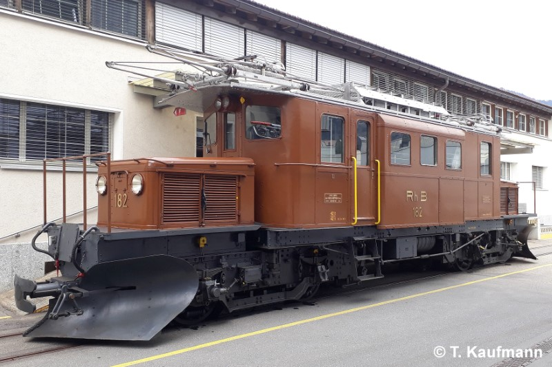
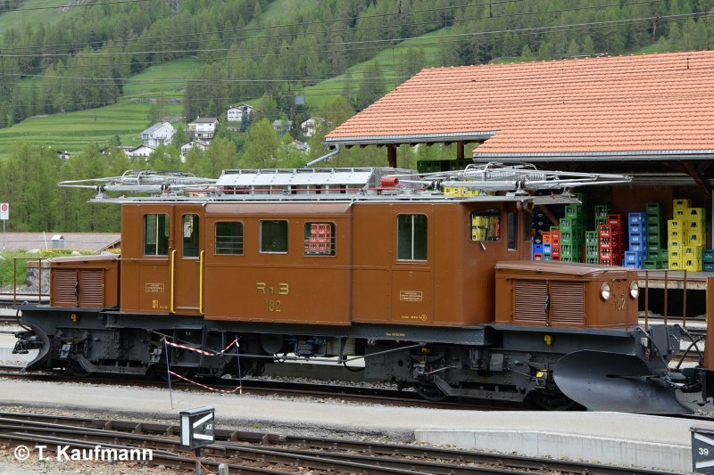

Allgemein
| Baujahr | 1928 / Renoviert 2010 |
| Einsatz | BB |
| Antriebstechnik | elektropneumatische Schützensteuerung |
| Leistung | 612 PS / 450 kW |
| Ergänzungsbremse | elektrische Widerstandsbremse |
| Stationiert | Pontresina |
Technische Daten
| Geschwindigkeit | 45 km/h (Reihe A) |
| Länge | 14.00 m |
| Gewicht | 42 t [1] |
| Bremsgewicht | 42 t |
| Magnetschienenbremse | ja, nicht anrechenbar |
| Feststellbremse | H 2x 15 t (2x 18 kN) |
Fahrzeugausrüstung
| Zug-/ Stossvorrichtung | Stangenpuffer (verstärkt) Reduzierte Zughakenlast |
| Nylatron-Pufferplatten | keine |
| Vielfachsteuerung | keine |
| Zugbeeinflussung | ZSI E |
| Heizleitung | BB (1000 V) |
| Speiseluft-Leitung | keine [2] |
| Bremssystem | Vakuum-Hauptleitung |
| LBT-Leitung | ja (nur für Spurpflug / Räumer), nicht durchgehend |